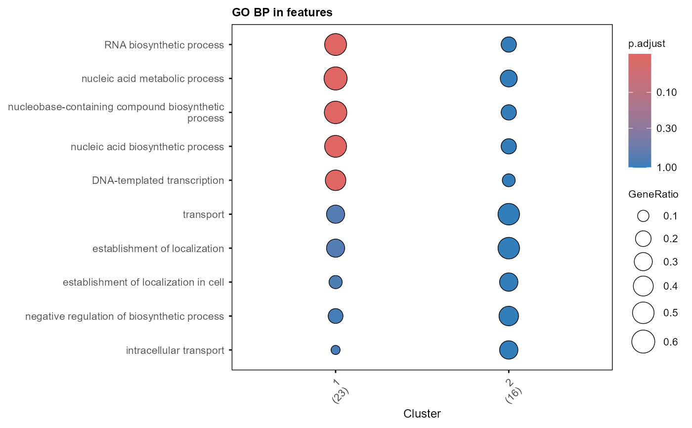

Visualization of GO enrichment analysis with dotplot, cnetplot, or emapplot in clusterProfiler
Usage
plot_GO(
go_list,
plot_dotplot = FALSE,
plot_cnetplot = FALSE,
plot_emapplot = FALSE,
showCategory_dotplot = 5,
showCategory_cnetplot = 5,
showCategory_emapplot = 5,
fontsize = 8,
label = "features",
...
)Arguments
- go_list
A list of enriched GO results, output from
enrichGO_list()- plot_dotplot
Whether to plot dotplot (default is TRUE)
- plot_cnetplot
Whether to plot cnetplot (default is FALSE)
- plot_emapplot
Whether to plot emapplot (default is FALSE)
- showCategory_dotplot
showCategory parameter of
clusterProfiler::dotplot()(default is 5)- showCategory_cnetplot
showCategory parameter of
clusterProfiler::cnetplot()(default is 5)- showCategory_emapplot
showCategory parameter of
clusterProfiler::emapplot()(default is 5)- fontsize
Font size for the plots (default is 8)
- label
Title for the plots (default is "genes")
- ...
Additional parameters to pass to the plotting functions
clusterProfiler::dotplot(),clusterProfiler::cnetplot(), orclusterProfiler::emapplot()
Examples
library(dplyr)
library(org.Mm.eg.db)
data(example_net)
example_module <- data.frame(Module = as.factor(example_net$colors)) %>%
tibble::rownames_to_column("Feature") %>% arrange(Module)
# select two modules for demonstration
example_module_list <- example_module %>%
filter(Module %in% c(1, 2)) %>%
split(as.character(.$Module)) %>%
lapply(`[[`, "Feature")
# set cutoff to 1 to show all results for demonstration
example_go_list = enrichGO_list(example_module_list, OrgDb = org.Mm.eg.db,
universe = example_module$Feature,
pvalueCutoff = 1, qvalueCutoff = 1,
category = "BP", simplify = FALSE)
#> Performing GO enrichment for category: BP
#> Processing gene list: 1
#> 'select()' returned 1:1 mapping between keys and columns
#> 'select()' returned 1:1 mapping between keys and columns
#> Warning: 1.03% of input gene IDs are fail to map...
#> Processing gene list: 2
#> 'select()' returned 1:1 mapping between keys and columns
#> Warning: 5.88% of input gene IDs are fail to map...
#> 'select()' returned 1:1 mapping between keys and columns
#> Warning: 1.03% of input gene IDs are fail to map...
#> Merging GO enrichment results across gene lists for each category.
plot_GO(example_go_list$all, plot_dotplot = TRUE,
plot_emapplot = FALSE, plot_cnetplot = FALSE)
